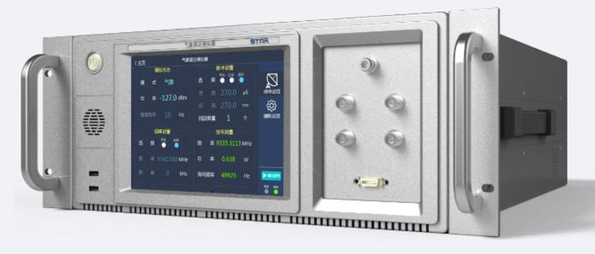
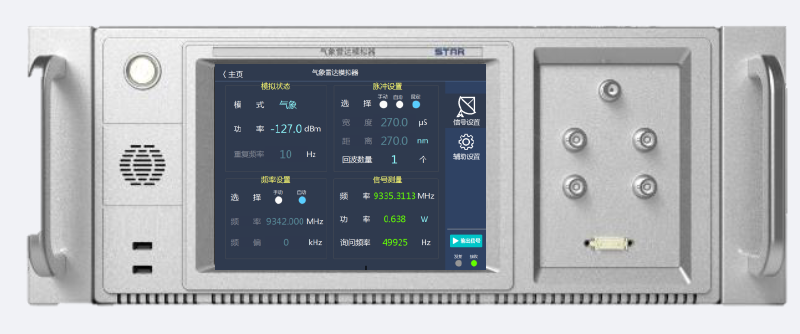

WRD-1000 Weather Radar Test Set
Request QuoteThe WRD-1000 simulates radar echoes and measures transmission power, frequency, sensitivity, and other parameters of airborne WXR systems, enabling complete testing of these devices.
It is suitable for engineering development, verification, manufacturing, and maintenance testing.
The WRD-1000 is equipped with a touch screen and user-friendly graphical software. It supports both local and remote operation and can function as a standalone instrument or be integrated into an ATE system.
The WRD-1000 is a modern replacement for the legacy RDX-7708 weather radar test set. As the RDX-7708 has been discontinued, the WRD-1000 provides a reliable alternative with enhanced performance and improved usability.
RDX7708 Replacement
If you are searching for the RDX-7708 test set, the WRD-1000 provides an equivalent, alternative, and direct replacement solution. It supports radar echo simulation, PRF testing, frequency measurement, and power analysis for avionics applications.

